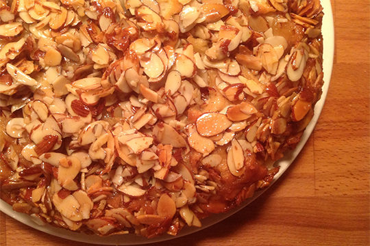

Honey Cake
If there's anything even the toughest Viking warriors can't resist, it's the sweetness of Honey. With this honey cake, you will be able to melt anyone's heart.
Ingredients
12 servings
Cake
- 2 1/4 teaspoons (or 1 1/4-ounce package) fresh yeast
- 3/4 cup whole milk, ideally at room temperature
- 1/4 cup sugar
- 2 cups flour
- 3/4 teaspoon salt
- 2 large eggs, ideally at room temperature
- 4 tablespoons unsalted butter, at room temperature
- 3 ounces sliced almonds
Pastry Cream Filling
- 1 cup milk
- 1 teaspoon pure vanilla extract
- 3 large egg yolks
- 3 tablespoons all-purpose flour or cornstarch
- 2 pinches salt
- 3ish tablespoons honey
- 2 tablespoons butter
- 3 ounces sliced almonds
Honey-Almond-Crunch Topping
- 6 tablespoons butter
- 1/3 cup granulated sugar
- 3 tablespoons honey
- 2 tablespoons heavy cream
- 1 1/2 cups sliced almonds
- Two pinches of salt
Directions
- Combine all of the cake ingredients in a bowl, stirring till it combined and battery, then stirring for two minutes more.
- Get all the batter off of the sides of the bowl and then cover with plastic wrap to let rise for an hour.
- For the crunchy toppings: In medium saucepan over medium heat, heat the butter, sugar, honey, cream and salt until the butter is melted. Bring to a simmer and let it boil for 3 to 5 minutes, until the mixture gets a bit darker. Set it aside to cool.
- Butter and flour a 8-inch round cake pan.Deflate the batter and then nudge it until it fills the bottom of the pan. Cover again with plastic wrap and set aside for another 30 minutes.
- Heat your oven to 350 degrees.
- To make the pastry filling, warm milk in a medium saucepan. Slowly drizzle 1-2 tablespoons of honey into the milk and warm it. Pour into a small bowl or cup, and set aside.
- Rinse saucepan and off the heat, whisk the yolks and sugar together like an angry viking. Whisk in flour and salt. Drizzle in warm honey-milk a spoonful at a time, whisking indefinitely. Off the heat, whisk in the butter and vanilla extract.
- Once the cake has finished its second rise, you gotta put the almond crunchy stuff on the cake.
- Bake cake for 20 to 25 minutes, until top is bronzed and toothpick inserted into the center comes out batter-free.
- Transfer to a cooling rack and after it sits a bit, run a knife around the circumference to free it from its spring form clutches. Let it cool.
- Finally, assemble the cake by flipping it and dividing it in half, width-wise, with a serrated knife. Do this carefully.
- Once both the cake and pastry cream are fully cooled, place the cake on a serving platter and enjoy!